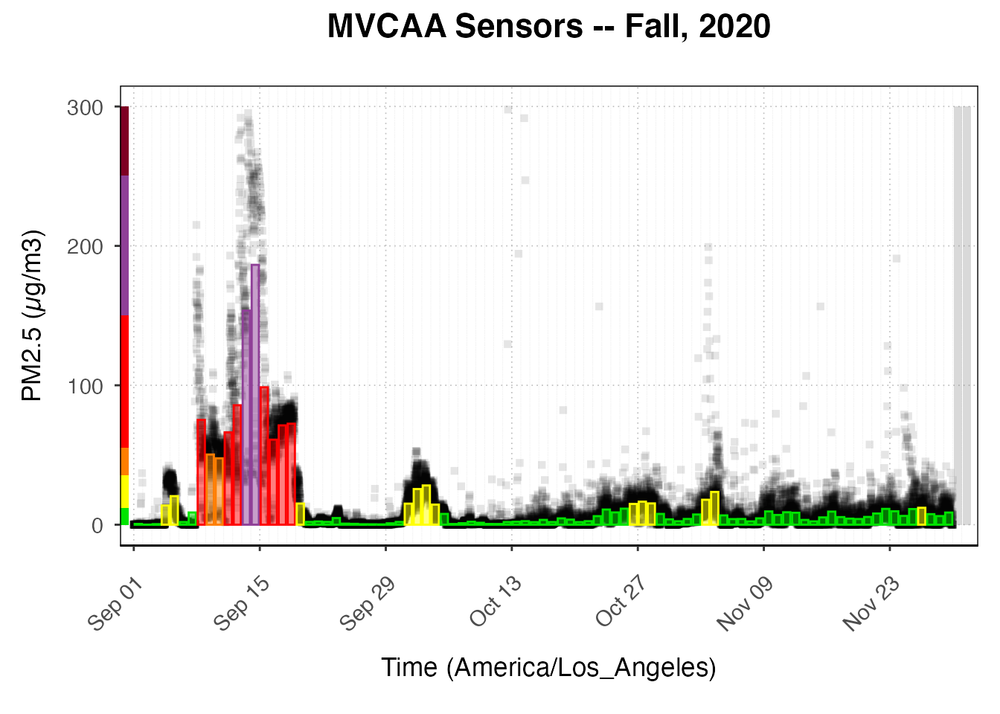
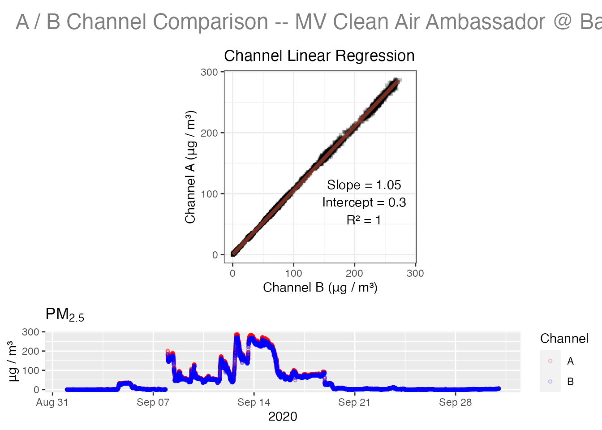
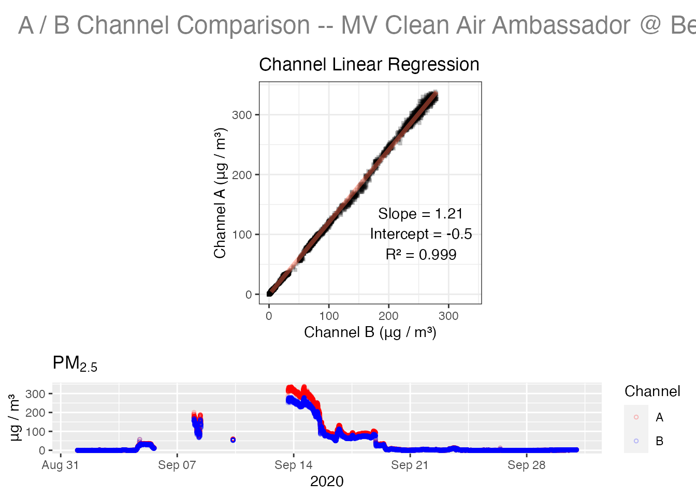
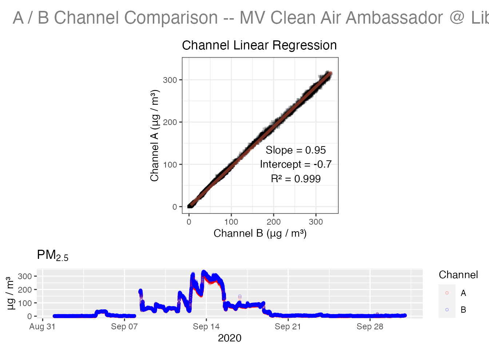
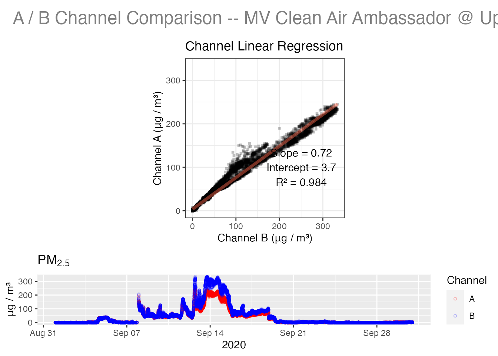
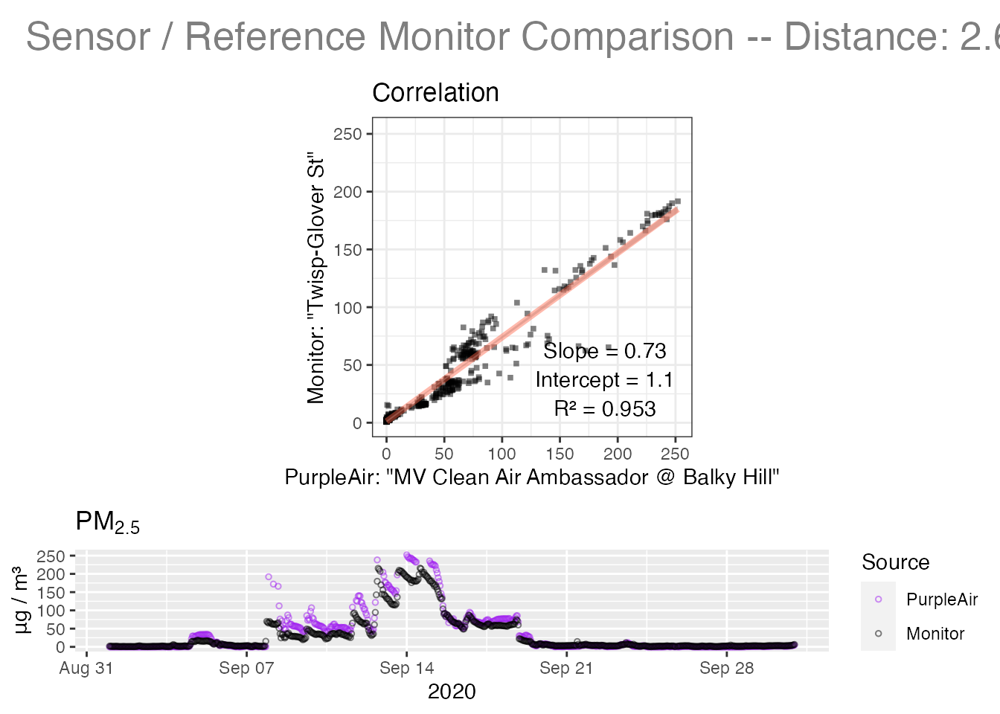
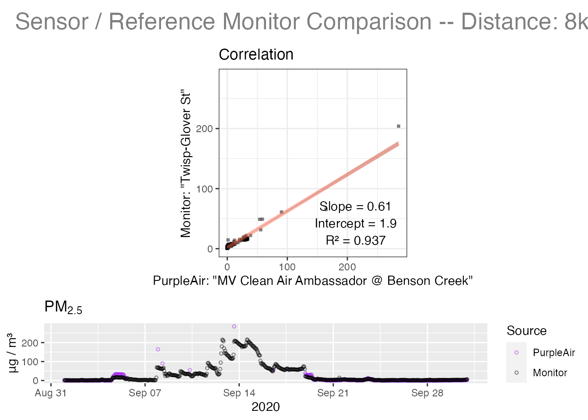
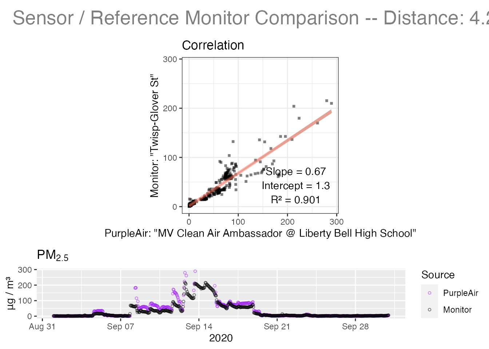
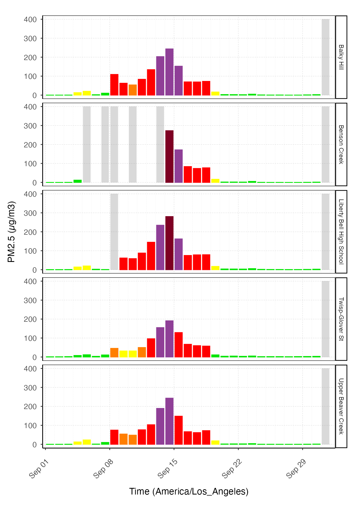

MVCAA Tutorial 6: Methow Vallely Smoke
Mazama Science
2021-03-30
Source:vignettes/articles/MVCAA_Tutorial_6.Rmd
MVCAA_Tutorial_6.RmdIntroduction
This tutorial demonstrates how to evaluate the performance of PA sensors by applying functions from the AirSensor package explored in previous tutorials. In order to run the code in this tutorial you must have followed the instructions in Tutorial 5 and created a local, multi-month archive of PurpleAir timeseries data. Target audiences include grad students, researchers and any member of the public concerned about air quality and comfortable working with R and RStudio.
Tutorials in this series include:
Goal
The goal in this tutorial is to demonstrate how to evaluate the performance of PA sensors under very high PM25 concentrations due to wildfire smoke. We will do some basic data exploration and evaluate several PA sensors, comparing their data with data from a nearby regulatory monitor.
Intro
On September 6 and 7, two wildfires were ignited not far from the Methow Valley –- Cold Springs and Pearl Hill, together burning over 410,000 acres of grass and shrub throughout the month. Additionally, at the beginning of September, multiple wildfires exploded across the Oregon Cascades, and a “super massive” plume of smoke was carried to Washington State by southerly winds. Eventually the smoke settled in the valleys and basins of Washington and air pollution reached unhealthy levels across the state (See: https://wasmoke.blogspot.com/2020/09/). The timeseries plots below show that September was the smokiest month during the Fall of 2020.
Data and Graphics
Let’s begin our journey by plotting hourly values and daily averages for our MVCAA sensors during September, 2020.
# libraries
library(AirSensor)
library(PWFSLSmoke)
library(AirMonitorPlots)
library(ggplot2)
# Use the default archiveDir unless it is already defined
if ( !exists("archiveDir") ) {
archiveDir <- file.path("~/Data/MVCAA")
}
# Set the package archiveBaseDir so we can load sensor objects with `sensor_load()`
setArchiveBaseDir(archiveDir)
# Load sensor data from our archive
mvcaa_sensors_fall <-
sensor_load(
collection = "mvcaa",
startdate = 20200901,
enddate = 20201201,
timezone = "America/Los_Angeles"
)
# Plot all hourly values with daily averages
mvcaa_sensors_fall %>%
AirMonitorPlots::ggplot_pm25Timeseries() +
ggplot2::ggtitle("MVCAA Sensors -- Fall, 2020") +
AirMonitorPlots::geom_pm25Points(shape = "square", alpha = .1) +
AirMonitorPlots::stat_dailyAQCategory(alpha = .5) +
ggplot2::scale_y_continuous(limits = c(0, 300)) +
AirMonitorPlots::custom_aqiStackedBar(width = 0.01) 
Lets now find some official monitors in the Methow Valley for comparison. Data for FRM/FEM monitors is available using the PWFSLSmoke package.
NOTE: We refer to hourly aggregated PA data from the AirSensor as ‘sensors’ and hourly FRM data from the PWFSLSmoke package as ‘monitors’ but the data structures are nearly identical and both can be used with monitor_~() functions from the PWFSLSmoke package.
# Methow Valley region
xlim <- c(
min(mvcaa_sensors_fall$meta$longitude, na.rm = TRUE),
max(mvcaa_sensors_fall$meta$longitude, na.rm = TRUE)
)
ylim <- c(
min(mvcaa_sensors_fall$meta$latitude, na.rm = TRUE),
max(mvcaa_sensors_fall$meta$latitude, na.rm = TRUE)
)
# load September monitor data
mv_monitors_fall <-
PWFSLSmoke::monitor_load(startdate = 20200901, enddate = 20201201) %>%
monitor_subset(xlim = xlim, ylim = ylim)
# Plot all monitor data with daily averages
mv_monitors_fall %>%
AirMonitorPlots::ggplot_pm25Timeseries() +
ggplot2::ggtitle("Methow Valley FRM monitors -- Fall, 2020") +
AirMonitorPlots::geom_pm25Points(shape = "square", alpha = .1) +
AirMonitorPlots::stat_dailyAQCategory(alpha = .5) +
ggplot2::scale_y_continuous(limits = c(0, 300)) +
AirMonitorPlots::custom_aqiStackedBar(width = 0.01)
Data from the PurpleAir sensors and the regulatory monitors tell a very similar story. Let’s look more closely at how PA sensors performed compared to one of the FRM monitors in September, 2020. We use an interactive map to identify the monitorID associated with Twisp, Washington.
# Click on Twisp in the interactive map
PWFSLSmoke::monitor_leaflet(mv_monitors_fall)With the monitorID for Twisp, we can isolate that monitor and review the meta dataframe which contains the associated spatial metadata.
# Create a single-monitor object for Twisp
# NOTE: The older PWFSLSmoke package monitor_~() functions use a "subset"
# NOTE: style syntax rather than the more modern "filter" style syntax.
Twisp_monitor <- monitor_subset(
mv_monitors_fall,
monitorIDs = "530470009_01",
tlim = c(20200901, 20201001),
timezone = "America/Los_Angeles"
)
dplyr::glimpse(Twisp_monitor$meta)## Rows: 1
## Columns: 19
## $ monitorID <chr> "530470009_01"
## $ longitude <dbl> -120.1211
## $ latitude <dbl> 48.3645
## $ elevation <dbl> 492
## $ timezone <chr> "America/Los_Angeles"
## $ countryCode <chr> "US"
## $ stateCode <chr> "WA"
## $ siteName <chr> "Twisp-Glover St"
## $ agencyName <chr> "Washington Department of Ecology"
## $ countyName <chr> "Chelan"
## $ msaName <chr> NA
## $ monitorType <chr> NA
## $ siteID <chr> "530470009"
## $ instrumentID <chr> "01"
## $ aqsID <chr> "530470009"
## $ pwfslID <chr> NA
## $ pwfslDataIngestSource <chr> "AIRNOW"
## $ telemetryAggregator <chr> NA
## $ telemetryUnitID <chr> NAWe can use this spatial metadata for Twisp to find all sensors within 10 km.
# Load mvcaa pas file
mvcaa <- get(load(file.path(archiveDir, "mvcaa.rda")))
# Find sensors close to the "Twisp-Glover St" monitor
Twisp_pas <- pas_filterNear(
pas = mvcaa,
longitude = -120.1211,
latitude = 48.3645,
radius = "10 km"
)
Twisp_sensorIDs <- pas_getDeviceDeploymentIDs(Twisp_pas)
# Create a multi-sensor object for Twisp
# NOTE: The AirSensor package sensor_~() functions use a "filter" style syntax.
Twisp_sensors <-
sensor_filterMeta(
mvcaa_sensors_fall,
deviceDeploymentID %in% Twisp_sensorIDs
) %>%
sensor_filterDate(
startdate = 20200901,
enddate = 20201001,
timezone = "America/Los_Angeles"
)
dplyr::glimpse(Twisp_sensors$meta)## Rows: 4
## Columns: 35
## $ ID <chr> "13669", "10182", "39237", "10168"
## $ label <chr> "MV Clean Air Ambassador @ Balky Hil…
## $ sensorType <chr> "PMS5003+PMS5003+BME280", "PMS5003+P…
## $ DEVICE_LOCATIONTYPE <chr> "outside", "outside", "outside", "ou…
## $ THINGSPEAK_PRIMARY_ID <chr> "546462", "488150", "867178", "48812…
## $ THINGSPEAK_PRIMARY_ID_READ_KEY <chr> "IED4YX3BZ1L6BFNV", "FO9OY4N1IBCRCV0…
## $ THINGSPEAK_SECONDARY_ID <chr> "546463", "488151", "867179", "48812…
## $ THINGSPEAK_SECONDARY_ID_READ_KEY <chr> "ZI005QWNICOEGP2I", "4K9BD1JKVIH00RZ…
## $ longitude <dbl> -120.1074, -120.0393, -120.1698, -12…
## $ latitude <dbl> 48.37780, 48.29690, 48.44244, 48.394…
## $ countryCode <chr> "US", "US", "US", "US"
## $ stateCode <chr> "WA", "WA", "WA", "WA"
## $ timezone <chr> "America/Los_Angeles", "America/Los_…
## $ deviceID <chr> "13669", "10182", "39237", "10168"
## $ locationID <chr> "ab5dca99422f2c0d", "f6c44edd41c941c…
## $ deviceDeploymentID <chr> "ab5dca99422f2c0d_13669", "f6c44edd4…
## $ pwfsl_closestDistance <dbl> 2641.011, 8017.898, 4163.514, 6344.5…
## $ pwfsl_closestMonitorID <chr> "840530470016_01", "840530470016_01"…
## $ sensorManufacturer <chr> "Purple Air", "Purple Air", "Purple …
## $ targetPollutant <chr> "PM", "PM", "PM", "PM"
## $ technologyType <chr> "consumer-grade", "consumer-grade", …
## $ communityRegion <chr> NA, NA, NA, NA
## $ monitorID <chr> "ab5dca99422f2c0d_13669", "f6c44edd4…
## $ elevation <dbl> NA, NA, NA, NA
## $ siteName <chr> "MV Clean Air Ambassador @ Balky Hil…
## $ countyName <chr> NA, NA, NA, NA
## $ msaName <chr> NA, NA, NA, NA
## $ monitorType <chr> "PMS5003+PMS5003+BME280", "PMS5003+P…
## $ siteID <chr> "ab5dca99422f2c0d", "f6c44edd41c941c…
## $ instrumentID <chr> "13669", "10182", "39237", "10168"
## $ aqsID <chr> NA, NA, NA, NA
## $ pwfslID <chr> NA, NA, NA, NA
## $ pwfslDataIngestSource <chr> "ThingSpeak", "ThingSpeak", "ThingSp…
## $ telemetryAggregator <chr> NA, NA, NA, NA
## $ telemetryUnitID <chr> NA, NA, NA, NAIt is important to understand that hourly aggregated airsensor objects from the AirSensor package are compatible with monitor objects from the PWFSLSmoke package. Because of this, we can combine both into a single object for plotting.
# Combine "monitor" and PA-derived "airsensor" objects
Twisp <- PWFSLSmoke::monitor_combine(list(Twisp_monitor, Twisp_sensors))
# Print out the the names
Twisp$meta$siteName## [1] "Twisp-Glover St"
## [2] "MV Clean Air Ambassador @ Balky Hill"
## [3] "MV Clean Air Ambassador @ Benson Creek"
## [4] "MV Clean Air Ambassador @ Liberty Bell High School"
## [5] "MV Clean Air Ambassador @ Upper Beaver Creek"
# Help ggplot out by assigning short names to be used as the facet label
Twisp$meta$shortName <-
Twisp$meta$siteName %>%
stringr::str_replace("MV Clean Air Ambassador @", "") %>%
stringr::str_replace("MV Clean Air Ambassador-", "") %>%
stringr::str_trim()
# The followingn functions are from the AirMonitorPlots package
ggplot_pm25Timeseries(Twisp) +
stat_dailyAQCategory(timezone = "America/Los_Angeles") +
facet_grid(rows = vars(shortName))
We can see that the Twisp-Glover St. monitor recorded increasing PM2.5 concentrations up to very unhealthy levels (purple) between Sep 10 and 19 and that three out of four sensors within a radius of 10 km from the monitor don’t show data during the smokiest days.
The default QC algorithm AB_01 that was used by pat_createAirSensor() in Tutorial 5 appears to be invalidating many hourly values on those days, presumably because the A and B channel PM2.5 values differ by more than is allowed by that algorithm.
We can address this problem by creating a new sensor object for each senso using the QC algorithm AB_00 which is more forgiving of A/B channel differences.
But first, let’s explore the raw data by running pat_internalFit() for a quick assessment of the raw data for each of our sensors.
#--------------- pat internal fits----------------------------------------------
Balky_Hill <- pat_loadMonth(
id = "ab5dca99422f2c0d_13669",
datestamp = 202009,
timezone = "America/Los_Angeles"
)
pat_internalFit(Balky_Hill)
Benson_Creek <- pat_loadMonth(
id = "f6c44edd41c941c7_10182",
datestamp = 202009,
timezone = "America/Los_Angeles"
)
pat_internalFit(Benson_Creek)
Liberty_Bell_HS <- pat_loadMonth(
id = "db5d6b3b79f5830e_39237",
datestamp = 202009,
timezone = "America/Los_Angeles"
)
pat_internalFit(Liberty_Bell_HS)
Upper_Beaver_Creek <- pat_loadMonth(
id = "2e3b5ceea86a885b_10168",
datestamp = 202009,
timezone = "America/Los_Angeles"
)
pat_internalFit(Upper_Beaver_Creek)
Given the thousands of observations included in each data set, we would expect internal fits with an r-squared value of >= 0.99 and a slope of ~ 1 for sensors that functioned perfectly.
The internal fit plots show that all sensors did quite a good job at measuring the PM25 concentrations. Benson Creek sensor had multiple days with missing data and Upper Beaver Creek showed some A/B mismatch during the thickest smoke but. But A and B channels tracked eachother well (r-squared) for all sensors.
Now we can compare each sensor against the Twisp monitor with the pat_externalFit() function.
NOTE: Looking at the $meta of each pat object, we see that the current nearest monitor is different from the monitor that collected PM2.5 concentrations during September 2020. For this reason, we are going to edit the $meta of each pat object and replace the current pwfsl_closestMonitorID with the one active in September 2020.
# First, substitute the current closest monitor with the 2020 Twisp
# monitor ID.
# Check the current closest monitor
Balky_Hill$meta$pwfsl_closestMonitorID #"840530470016_01"## [1] "840530470016_01"
# Assign the Twisp monitor ID to pwfsl_closestMonitorID
Balky_Hill$meta$pwfsl_closestMonitorID <- "530470009_01"
Benson_Creek$meta$pwfsl_closestMonitorID <- "530470009_01"
Liberty_Bell_HS$meta$pwfsl_closestMonitorID <- "530470009_01"
Upper_Beaver_Creek$meta$pwfsl_closestMonitorID <- "530470009_01"
# Twisp ~ Balky_Hill
lm_BH <- pat_externalFit(
pat = Balky_Hill,
showPlot = TRUE
)
# Twisp ~ Benson_Creek
lm_BC <- pat_externalFit(
pat = Benson_Creek,
showPlot = TRUE
)
# Twisp ~ Liberty_Bell_HS
lm_LBHS <- pat_externalFit(
pat = Liberty_Bell_HS,
showPlot = TRUE
)
# distance: 4.2 km
# fit: 0.901 (missing days)
# Twisp ~ Upper_Beaver_Creek
lm_UBC <- pat_externalFit(
pat = Upper_Beaver_Creek,
showPlot = TRUE
)
When compared to the Twisp monitor data, the external fit plots show that Balky Hill was the one performing best, followed by Liberty Bell High School, and Upper Beaver Creek (we are not considering Benson Creek due to the substantial missing data during the smokiest days).
Linear fits comparing sensor data with nearby monitor data will should at least have an r-squared value > 0.8 to be considered reasonable.
We will make the executive decision that all of these sensors are performing acceptably and will use the more lenient AB_00 Quality Control algorithm to create airsensor objects that retain more data.
#--- create sensor objects using AB_00 ----
BH_00 <-
Balky_Hill %>%
pat_createAirSensor(
FUN = PurpleAirQC_hourly_AB_00
)
BC_00 <-
Benson_Creek %>%
pat_createAirSensor(
FUN = PurpleAirQC_hourly_AB_00
)
LBHS_00 <-
Liberty_Bell_HS %>%
pat_createAirSensor(
FUN = PurpleAirQC_hourly_AB_00
)
UBC_00 <-
Upper_Beaver_Creek %>%
pat_createAirSensor(
FUN = PurpleAirQC_hourly_AB_00
)
# combine sensors and monitor
Twisp_00 <- monitor_combine(list(BH_00, BC_00, LBHS_00, UBC_00, Twisp_monitor))When it comes to external fits, it is important to consider geographic features such as distance and topography. Indeed, topography affects air movement and therefore PM25 concentrations, having an effect on the external fit results. A shorter distance between sensor and monitor should result in a better fit as long as both are at a similar elevation.
# Create a leaflet map
monitor_leaflet(Twisp_00)Looking at the map above we notice that Balky Hill is the closest sensor to the monitor in Twisp. We can also see that there are some significant hills separating Upper Beaver Creek from Twisp. Finally, Liberty Bell High School is the farthest sensor but the terrain between this and Twisp is flat.
Now that we have created new sensor objects with the AB_00 QC algorithm, we can recreate the daily barplots.
# Help ggplot out by assigning short labels to be used as the facet label
Twisp_00$meta$shortName <-
Twisp_00$meta$siteName %>%
stringr::str_replace("MV Clean Air Ambassador @", "") %>%
stringr::str_replace("MV Clean Air Ambassador-", "") %>%
stringr::str_trim()
ggplot_pm25Timeseries(Twisp_00) +
stat_dailyAQCategory(timezone = "America/Los_Angeles") +
facet_grid(rows = vars(shortName)) These plots confirm that, initially, the sensors’ data was invalidated by the QC algorithm AB_01. By applying the QC algorithm AB_00, it is possible to retain more hourly values and produce a plot which better represents the data collected by the PurpleAir sensors. These sensors agree quite well with the measurements made by the regulatory monitor.
Conclusion
PA sensors can provide useful information when evaluate PM2.5 concentrations but require a careful assessment to understand whether they are working properly. As we saw in previous tutorials, the AirSensor package offers functions to assess the state of heath of sensors, including variables such as temperature and humidity. The package also includes functions to evaluate, manipulate, visualize and map the data.
In this tutorial, we demonstrated how to quickly investigate the performance of multiple sensors, how to trouble shoot and fix potential issues, and how to interpret and visualize the data with simple plots.
At the end of the day, it’s up to the individual to decide which QC algorithm to apply and which sensors to include in your study. These decisions cannot yet be automated and must be based on overall sensor performance, a review of days with missing data, internal and external fits, and consideration of the terrain features.
Best of luck assessing air quality in your community!